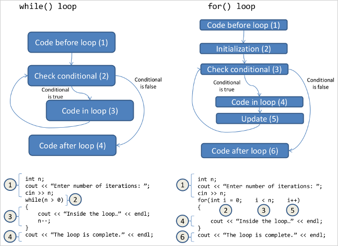

Anything a while loop can do, a for loop can do, and vice
versa. However, each kind of loop is used equally often in practice
because they have slightly different "styles." First, we will look at
how for loops work.
This is the basic structure of a for loop:
for(initialization; conditional; update) { // do stuff... }
This is what the three parts inside the parentheses (commonly) mean:
initialization — create counting variables and set their valuesconditional — determine if the loop should repeat; this
conditional usually refers to a variable defined in the
initializationupdate — commonly used to change a variable defined in the
initialization and referred to in the conditional; changing this
variable should eventually cause the conditional to be false,
causing the loop to completefor loops follow this sequence of steps:
initializationconditional; if it evaluates to false (0) then skip the
loop; if it evaluates to true (any integer not equal to 0),
continue to the next stepstuff inside the blockupdateIt's useful to see how a while loop can be converted to a for loop. In
this example, the while loop and the for loop are (nearly) equivalent:
int i = 0; while(i < 10) { // do stuff... i++; } for(int i = 0; i < 10; i++) { // do stuff... }
(The two are only "nearly" equivalent for the following reason: in the
while loop case, the integer i is declared outside of the loop, so
code that follows the loop block can still refer to i. In the for loop
case, the integer i can only be used inside the for loop block; it
does not exist when the loop is finished.)
Let's dissect that for loop above:
initialization —
int i = 0conditional —
i < 10update —
i++You should be able to see these same three components present in the
while loop, but the while loop does not have special handling of the
three components. On the other hand, a for loop is specifically
designed to have exactly those three components (initialization,
conditional, and update).
A for loop need not have anything in any of the three components. If
none of the components have code in them, it is equivalent to an
infinite loop. In other words, these two loops are equivalent:
while(true) { // do stuff forever... (or until "break" is encountered) } for(;;) { // do stuff forever... (or until "break" is encountered) }
Here is the bottles-of-beer example again, this time using a for loop:
for(int n = 99; n > 1; n--) { cout << n << " bottles of beer..." << "take one down..." << (n-1) << " bottles of beer..." << endl; } cout << "1 bottle of beer ..." << endl;
Here is an example that is equivalent to
int sum = 0; for(int j = 1; j <= 100; j++) { for(int k = 1; k <= 100; k++) { sum += (j+k)*(j+k); } }
Here is an example that prints a triangle of stars:
// the maximum width of a line of stars int width = 30; // print 2 stars, then 4 stars, etc., centered on the line for(int i = 2; i <= width; i += 2) { // we want to print "i" stars in the middle of the line, // so we need to add spaces before the stars, then print // the stars (we don't need spaces after the stars, just // a newline) // print spaces for(int j = 0; j < ((width - i) / 2); j++) { cout << " "; } // print stars for(int j = 0; j < i; j++) { cout << "*"; } // print newline cout << endl; }
Here is the result:
**
****
******
********
**********
************
**************
****************
******************
********************
**********************
************************
**************************
****************************
******************************
Let's fix that extra blank line at the bottom. We will check if the loop is on the last iteration; if it is, we don't print the last line:
// the maximum width of a line of stars int width = 30; // print 2 stars, then 4 stars, etc., centered on the line for(int i = 2; i <= width; i += 2) { // we want to print "i" stars in the middle of the line, // so we need to add spaces before the stars, then print // the stars (we don't need spaces after the stars, just // a newline) // print spaces for(int j = 0; j < ((width - i) / 2); j++) { cout << " "; } // print stars for(int j = 0; j < i; j++) { cout << "*"; } // print newline only if we aren't on the last line if(i != width) { cout << endl; } }
Notice that in each of these examples, we are doing stuff some
particular number of times (the number of times is already known, like
100, or stored in an integer or a calculation, such as ((width - i)
/ 2)). These are the typical use cases for the for loop.
